July 06, 2007
Making the Most of Interactive Timelines, Maps et al.
At a (not so) recent meeting of the T151, our new in production short course on gaming and interactive media, one of the stories we all thought was important to tell was the evolution of interactive computer games by means of a timeline.
Something like this, for example (taken from xtimeline) - The History of Video Games:
That usable timeline widgets are now readily available is a given - the technology is in place - but that said, I don't really have a good feeling (yet) for how to use them effectively (if they can be used effectively) in an online, e-learning context.
So now I can have a interactive timeline in my course materials.... so what?
And now we can provide our students with a tool to produce their own timelines (for an assessment exercise, maybe?) So what?
Yes - it's using the technology; it may even be using the technology appropriately. But how does it help deliver instruction (?hmmm...) about the History of Video Games, for example?
The same goes for the use of maps, audio clips, video, interactive visualisation tools and so on.
Increasingly, it seems to me that pretty much anything you want or can think of you can embed in a web page!
But how? How can we use these interactive tools effectively?
What would it mean to say the tool has been used effectively, has been used appropriately?
At the OU, we like to think (rightly) that we have a good understanding of how to construct print based, distance learning educational materials - tutorials in print - supported by a network of personal tutors and online forums.
But I'm not so sure that we - or anyone else for that matter - has really got to grips with developing pedagogically sound, compelling and engaging online delivery models.
So here's where I'm stuck at at the moment:
- "Training" people how to add data to maps, create timelines, etc etc is important and something we should be doing. Why? I don't know - maybe because it's a useful online communication skill?
- Using interactive maps etc. is a way of encouraging learners to explore.... errr... explore what, I'm not exactly sure.
- Embedding audio and video in online material breaks up the text and makes use of the medium. It allows learners to hear real voices, see real people. But is that important. Do I need to see Professor XYZ talking about whatever, when I can just read their paper? Or does rich media content break the flow of study (i.e. break the flow of reading print on-screen... Or maybe I printed everyhting off and I'm reading it on paper?)
For example, last week, I gave a demo of Google Earth with an overlay of UK radio masts. When looked at with terrain, you could see the elevation of the sites where the maps were located. Some masts even had 3D models available (like the Emley Moor mast).

This feels to me like it's the right thing to do - if we were teaching about locating radio masts, letting people explore sites they knew about with this tool seems like a sensible thing to do. But justifying it seems harder...
Why is this? Introducing interactive components makes everything an "activity", which means giving up some sort of control we have over our students. To make the activity relevant, we need to associate some sort of learning outcome to the activity, and ideally provide some sort of objective or self-assessment to provide a goal based focus for the activity.
Which is where I personally tend to come unstuck, I think...
[I also think that there is something "experiential" afforded by interactive components, but I need to spend a bit more time (that is - some time, period;-) mulling this over... Trying to justify building mashups as community oriented, experiential learning activity might be interesting! (starting point? Constructing Experiential Learning for Online Courses: The Birth of E-Service.]
If you believe - as I do - that "only everything is important", narrowing down the focus for a learning objective can be quite hard to do (especially if you acknowledge that each of our very different individual students has their own interests, their own goals, their own expertise and experience and even more so if you want to provide each of them an experience that is meaningful, relevant and appropriate to them even if that means that the experience of the activity is different for each student).
Looking at the image above, I could happily turn the exercise into a consideration of radio propagation, how to construct the 3D model of the mast, the format of the KML file that is used to overlay the radio mast icons, the algorithms involved in orienting the perspective of the scene (tilting the map!) in Google Earth, the distribution of settlements around the mast, the immediate risks and emergency access routes in the event of the tower becoming unstable etc etc.
Which is to say, the point of the activity for me would really just be saying: look at what's possible with this technology. Use it....* - for something, anything...! And here's one example of how we might use it in this case... (*where appropriate...) The important thing is not necessarily knowing how to do something, but that it is possible within certain limits. It is possible to plot masts on a map and generate radio propagation maps. But it's not necessarily important that you know how to do it.
See also:
- More Timelines: oneTimeLine and the BBC British History Timeline
- Google Maps and Timelines - Side by Side
April 22, 2007
An MIT OpenCourseWare Course via an OPML Feed
Over the weekend, I noticed that MIT OpenCourseWare courses were offering a "Download this Course" option. Intrigued, I immediately grabbed a copy of the CMS.610 / CMS.922 Media Industries and Systems, Spring 2006 course and had a poke around inside it.
The download bundle is - I guess(?!) - a standard (?) IMS - err - package? (can you tell I'm not up on educational material interoperability standards?!;-)
That is to say, the zip archive file opens into a set of nested directories with an imsmanifest.xml document. The archive file also contained copies of the HTML pages used on the course website as well as the PDF versions of the course lecture notes.
What I had been hoping for was a 'clean' XML version of the course webpages (i.e. a single source document from which they had been generated). Some hope!
Anyway, my initial enthusiasm curbed somewhat, I felt there was still some mileage to be made in RSSifiying the course, for three main reasons.
Firstly to see if what came out was "sensible" - i.e. whether a feed based version of the course could be sensibly viewed in a Grazr or Stringle environment, for example.
Secondly, to get a feeling for how to decompose a feed-delivered version of the course into separate component feeds.
Thirdly, to see whether those component feeds could be automatically generated from the IMS manifest, or scraped from the MIT OpenCourseware web pages.
The course - as published on the MIT OpenCourseWare website - is structured according to the course syllabus, readings, lecture notes, projects (i.e. group and individual activities) and related resources.
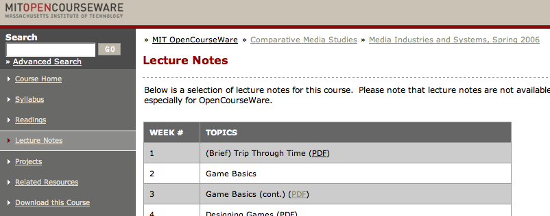
As a first pass, I have generated an OPML version of the course that follows a similar structure. At the moment, this OPML feed is - to all intents and purposes - a monolithic feed. Over the coming weeks I intend to disaggregate it into separate component feeds that can be reaggregated in an OPML feed that pulls in separate OPML and RSS component feeds.
You can view the OPML version of the course here: MIT OCW CMS610 Spring, 2006, Comparative Media (via Grazr).

Note that at the current time, some of the links (to New York Times) resources require a NYT login. I will patch these as and when I can. In addition, the links to audio-visual resources should really be made available via an embedded player, as well as link to the original site.
A cursory scan of the OpenCourseWare site suggests that the way individual web pages are composed across different courses is rather arbitrary, which will make scraping the site to automate feed production somewhat tricky.
I should be thankful for small mercies in the way OpenLearn content is bundled as XML I suppose!
PS this is spot on.
April 17, 2007
Embedding youTube Movies in "Commercial" elearning Materials
One of the things I (supposedly) do when not tinkering with Web 2.0 toys is look after an introductory OU short course on robotics.
Robotics as a subject area is pretty well suited to making reuse of 3rd party content to illustrate points, especially in an online course: movies and images are order of the day, as you might imagine:
The question is, could I legitimately embed a youTube movie (assuming I could verify that it was a 'legitimately' uploaded video, of course;-) in course materials that are only viewable by registered (i.e. fee paying) students?
The youTube T&C states:
F. YouTube permits you to link to materials on the Website for personal, non-commercial purposes only. In addition, YouTube provides an "Embeddable Player" feature, which you may incorporate into your own personal, non-commercial websites for use in accessing the materials on the Website, provided that you include a prominent link back to the YouTube website on the pages containing the Embeddable Player. YouTube reserves the right to discontinue any aspect of the YouTube Website at any time.
So is an OU online course a commercial service? Can I embed a movie under the above condition or not?
If anyone is has tried to get youTube movies embedded in an online course and/or has taken advice from their rights department on this topic (as I am about tto do) I'd be interested in hearing how you got on...
Similarly, if anyone is using any third party service as an integral part of their course (flickr, maybe?), how did you get on?
I know there were discussions here at the OU about the possibility of getting students to use flickr in our new Digital Photography short course, with an OU developed front end plugged into the flickr API.
But for whatever reason, that route wasn't taken and instead a flickr clone was built in-house. (I'm not sure what sort of export options or sharing support/API is available though? In the time available for development, I'd guess flickr offers more... and I don't know whether the storage space is capped, either?)
Whilst rights aren't my strong thing, I could imagine that the following would be treated differently:
1) a course team/instructor getting a youTube movie (or flickr slideshow etc.) embedded in some formally delivered elearning materials;
2) a student embedding a youTube movie in a personal, course related blog post using a blogging system provided by their HEI to support their studies.
I don't know if things get trickier if, in the second case, the blog post is only viewable behind an HEI firewall/student registration required "paywall", compared to a situation where the blog is public?
Just by the by, this idea of PLE vs VLE published content ties in with the String'n'Glue Learning Environment appproach, as well as the notion of "distributed content publishing": "The challenge with the distributed content model (the notion that educational content comes to the learner's space, rather than the learner coming to a space decided by the educational facility) is that it runs against the in-grained assumptions of our value point in higher education or corporate environments."]
I have to admit that inspiration deserts me at the moment about where to go for advice on the issue of "can I/can't I embed 3rd party widget serving content" outside of the OU, (in part given I couldn't find any way of mailing youTube support;-)? JISC (err... which bit?)? CETIS (because this is all about reuse, right?;-)?
PS as well as looking for tales about using flickr'n'youTube like content/services as an integral part of an elearning course, I also need to play catch-up with how social bookmarking is being used for real in K12-HEI education by the students. Any and all pointers, war stories etc. appreciated - feel free to tag stuff for me (psychemedia) on delicious...;-0
PS I just spotted over on the Google Blog that presentations will soon be added to the Google docs'n'spreadsheets mix...
February 06, 2007
Getting into Gaming
Gaming is flavour of the day in several areas of the OU at the moment.
Digilab opened in the Library to act as a space to playfully engage with technology (a Wii is on the way, apparently ;-)
A couple of us are exploring a possible first level short course (with Abertay) on interactive multimedia and game design.
A small team in the Computing are exploring the possibility of a course in which students create a course on computer gaming in Java which could then, in principle, provide the basis for a course that could be delivered to another cohort:
The Computing Department of the OU is in the process of starting up a project which will get students to develop an OU course on a particular topic that the department does not currently teach; the course will use the OU’s VLE Moodle. The course will teach material on e-learning, teaching, clear writing and distributed working. It is envisaged that students would work as an OU course team in groups of five and at a certain point would work singly to develop a unit.
Our hope is that we can take the best of the material that has been produced and convert it into a presentable OU e-learning course.
This highly experimental course is a response to projects such as Wikipedia, WikiUniversity and activities such as blogging. It is highly experimental since it challenges many of the expectations that we have about course development at the OU...
(Rumours also tell of another approach to a student-generated course that is being explored in Social Sciences, this time using a model in which students must identify their own learning resources for use in a course in a rapidly changing area (such as climate change).)
And finally on the topic of games, there's a fulltime PhD postion going in IET for a project on Seventh Generation Games for Education:
The latest games consoles and handhelds hold exciting possibilities for rapid development of working games. But do such games offer anything new in educational terms? This studentship offers an opportunity to explore this question in relation to any curriculum area of your choosing, and any educational level of your choosing, from pre-school to university. Your proposal must outline an idea for an original game of innovative educational potential that you could prototype in no more than 8 weeks and with £2000 for equipment. During the MRes year, you would develop this prototype but you must also be prepared to spend six months learning about quantitative and qualitative research methods so that you can develop a robust plan for a formal educational evaluation of the prototype. You would conduct the evaluation over four weeks, identifying exactly what users learn. You would also need to write a well-referenced masters dissertation of at least 12,000 words that relates your research to the history of the educational evaluation of games and to common pedagogical frameworks. Progression from the MRes to the PhD is dependent on the quality of the dissertation and on the realistic educational potential of the idea.
I wonder what would be said if I applied for that post? ;-)
December 08, 2006
Roundtripping in StringLE
One of the 'emergent' features I've discovered about StringLE is the ability to do roundtripping - sort of.... By this I mean it's possible to use a tool in the stringle context to create a resource that you can bookmark and immediately gain access to from the StringLE navigation panel.
For example: if I add a feed to one of my delicious bookmark tags to the OPML file that is used to provide navigation via the StringLE embedded Grazr widget, I can create a resource and bookmark it with that tag (often from the resource creation application directly), at which point it becomes available via the navigation widget (err, that's not strictly true - the feed may need updating in the widget).
As well as being personally useful, this approach can be quite powerful in a social or collaborative context, where users can create - and share links to - new resources in real time, and in one place.
Using bookmarks in this way - as some sort of cross between a database and a live, cross-resource navigation menu - is actually quite appealing to me, particularly when resource creation tools are tightly coupled to the bookmarking system via a 'bookmark this creation' link.
So I'm now on the lookout for apps that let you create resources and bookmark them directly into delicious ;-)
I'm also trying to think up a novel way of using Exhibit, "a lightweight structured data publishing framework that lets you create web pages with support for sorting, filtering, and rich visualization".
For example, if you have a data source - such as bibliographic information in Bibtex format - you can use the Exhibition toolkit to produce your own interface to the Bibtex data.
What happens is that "Exhibit essentially removes the need for a database or a server side web application" by taking the source document, treating it's contents as data, and putting a search and filter interface over the top of it.
Now I wonder, can I give it a searchfeedr like back-end and use it to produce a single interface to user selected data sources?
Speaking of data, there's a data mashup tool just appeared on the scene too: Swivel ("YouTube for data" - described prelaunch in TechCrunch here.).
The idea seems to be that users upload their data, then anyone can remix it/plot it against other data sets (as long as the data shares at least one common dimension, such as time, I guess).
However, at the moment at least, it seems you can't directly plot data sets against each other withing the site limits. Unless I'm missing something obvious, it seems you can only create a graph that also includes data you have uploaded (one way of getting data into the system, I guess). The obvious workaround is to download someone else's data set (which you can do) and upload it back, I guess, then use it as the basis of your own graph.
Here's an example of how to create a Swivel chart (I dont have time to build one myself just now:-(
With online spreadsheets making APIs available (like Google Spreadsheets and Zoho sheets), it'll be interesting to see how long it takes for some online spreadsheets'n'Swivel mashups to appear on the scene.
What would be really neat would be to see Live Clipboard functionality appearing on some of these sites, so users could easily cut and paste data between them...
I'd also quite like to see support for geo-data on Swivel, and integration with generic mapping APIs like mapstraction. Then maybe some animation tools like Gapminder;-)
Now I wonder, will Ning get into this area too? It'd be a powerful addition to a prototypical NingLE (which I am really going to have to start thinking about. properly..)?
November 26, 2006
The Electronic Provision of Course Content
Over the last couple of years, I've played with - and reviewed - several different styles of online course. Some have been based around Flash presentations (animated slideshows with an audio track essentially); some have been lists of links to PDFs; some have been HTML content. Most have been delivered via some sort of website and viewed using a web browser.
A couple of approaches I'm interested in exploring relate to the delivery of course material through other means - online using web feeds (such as RSS); offline using portable devices, such as USB memory sticks. I'll post about RSS/web feed delivery and Portable Study Sticks in the next week or two, but here are some thoughts about some of the current issues (as I see them) relating to some of the ways I believe we currently deliver electronic course materials and electronic copies of printed course materials.
At the current time, student access to OU online course materials tends to be cut-off a few short weeks after the end of the course. Students can, of course, save their own copies of each course page (e.g. see the hints on how to do this relatively easily using the Scrapbook browser extension). I am unclear as to why physical/offline copies of courses are not provided as a matter of course at them moment - maybe it's a rights thing?
There have been one or two exceptions. A couple of Relevant Knowledge short courses (which combine HTML teaching materials and PDF practical guides) have been delivered on the relevant course CD-ROM and at least one other course with a large online/HTML course material component was made available as compressed HTML (using the chm format).
But as far as I know, providing a convenient downloadable version of our online courses has not been the norm. That said, some of these courses are becoming available now via OpenLearn (although it's interesting to note that - along with LabSpace - OpenLearn doesn't make easily usable, exportable/downloadable offline versions of the material available, although you can get an XML version of each course from the LabSpace site)).
One possible argument for not distributing HTML course materials is the fear that copies will get out into the wild and become obtainable outside the course registration (and payment ;-) loop? Another possibility is the well made one that online course materials can rot quite badly, and may as a result reduce the perceived quality of unsupported HTML materials (where the expectation may still be that th elinks will work). This is particularly true in respect of deep links (which we are not allowed to use, of course ;-) Or the allowable use of top/domain-level links with instructions on how to get to the deep page you want the student to visit (go to URL x, take the third link on the right, enter y in the search box and follow the link to z which was the third result when I tried...;-)
The availability of electronic course materials presenting a threat to the sale of courses is worth considering in a little more detail ("are we giving away our crown jewels?") and comparing with the situation that arises in the case of print materials...
...because it's worth reminding ourselves that copies of OU materials can be found in many reference libraries, as well as OU Study Centres; (and how about University Book Search, the third party OU second-hand course material website?)
The differences between the lifetime and cost of duplication of print materials compared to electronic materials is often brought out at this point - it's easy to pass on a copy of an electronic document, but harder to do the same for a physical one. But the availability of digital scanners with OCR capabilities means that the cost can be reduced, particularly if a community works together to scan a particular publication....
There is an interesting aside I would like to make here. One course I know of made use of a third party book that suffered from accessibility issues in terms of layout and typography that typically made it difficult to read by one or two students on each presentation of the course. In one presentation, the story goes that the students gathered together and retyped the whole book for the needy student(s) and presented it in a series of installments as accessible PDF. A flagrant breach of copyright, maybe, but a fine demonstration of a community working together to serve one of its less fortunate members ;-)
Whilst on the subject of stories, rumour also has it that talks are afoot about whether or not the OU should get involved with one of the online booksearch projects (such as Google Books or the Open Content Alliance) in getting OU legacy content scanned and made searchable. If this were to happen, then print materials would be available in two electronic formats (many of the OU's printed course materials are already made available to students in ebook/pdf format).
It is worth noting at this point that (as far as I know, and at least until a month or two ago, so I have been told) the course material ebooks are not currently available as a matter of course for preview/browsing by current OU students. In particular, requests from students for electronic copies of course materials from courses they are considering taking cannot - apparently - be satisfied. This reticence presumably follows from the assumption that if the materials are available, students won't study the course.
[Note to self - check this is still the case, e.g. by checking the Library catalogue and VLE for electronic versions of electronic OU Study Guides and course units).]
Anyway, back to the point: the fear that making content freely available would reduce the number of people registering for our courses was one of the concerns raised regarding the release of materials on OpenLearn under a Creative Commons license; but the OpenLearn considerations is actually different in kind. Firstly, because only a very small fraction of OU materials are being released to OpenLearn; and secondly, many of the materials being released are taken from courses that are no longer in presentation.
Even so, the argument that the access to materials if they are made available in electronic form will reduce the likelihood that people will buy the course those materials are provided in is not a strong one. Firstly, the OU is not just a content producer. The course package is an altogether different proposition, including as it does software packages, tutor support and face-to-face tutorials, moderated, course specific online communities, assessment, formal educational credit, and so on, all value adding services delivered in addition to the actual course materials. Secondly, 'free access to materials' is a loaded phrase. More accurate in this case would be 'the ability to preview course materials'.
That print course materials are made available in electronic form (which support search using desktop search tools, for example) whilst access to pure electronic content after the end of the course is not guaranteed seems a bit odd to me. If I take a traditional course, I leave with physical and electronic copies of the course materials. If I take an electronic course, I leave with nothing that I don;t copy myself. (Related to this are the lack of course related derivative products, such as course related link collections and search engines.)
Hmm.. one for the Library, I think... preview copies through the library catalogue of all course units, at least for users (students and/or staff) with a SAMS cookie set (i.e. OU authenticated users).
November 14, 2006
Online OPML Feed Management
A couple of people have asked over the last week or two whether I knew of an online OPML manager that could be used to create and organise hosted OPML feeds that could then be wired directly into StringLE.
I had a bit of a play over the weekend, and again today over lunch, and from the list of OPML managers I've collected, OPML Manager seems to fit the bill nicely.
So nicely, in fact, I'm using it to feed the default Stringle environment:
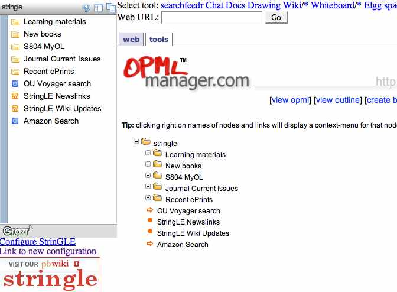
What this means is I now have a completely online solution for handling what gets fed into the Stringle navigation panel (remember, you can enter your own URL for the OPML feed using the customisation panel or the StringLE URL API).
I've added a link to OPML Manager from the top bar of StringLE. These tool links open in the Tools tab/panel (links from the Grazr navigation widget on the left hand side open in the Web panel).
You'll notice that the Grazr widget is now displaying a couple of OPML files (the blue feed icon). These are fed into Grazr as links - Grazr sniffs out the opml suffix and then handles them as you might expect it to...
I'm actually use these OPML files to pull in GrazrScripted search boxes - one for the OU Voyager library catalogue, one for Amazon (read more about Amazon in Grazr).
The Learning Materials section pulls in OpenLearn/Labspace content that I transformed to RSS, both directly and in a crude 'remix' - feeds generated from two Openlearn courses and piped through FeedDigest, along with a podcast feed, filtered using a couple of keywords, and then displayed in another Grazr widget (I'll pop a diagram up to show how it works in a couple of days...;-)
One thing I noticed doing this is that Grazr is capable of playing audio files embedded in a feed - there are some examples in the Learning materials section under 'Search Related IT Conversations' and here:

Apparently, embedded movies are also on the way...
If you try out StringLE, why not pop in to the chat room to see if anyone else is there. There is also a wiki that I'm going to start adding content to, too, but feel free to chip in (anonymous access is allowed but you need the password: StringLE).
If anyone wants an invite to the demo whiteboard or Elgg space, mail me... or leave a note in the wiki (create an Invites... page if there isn't one there already...)
November 09, 2006
Making the Most of Links from Online Course Materials to External Websites
At the request of the TU120 Course Team, I spent half an hour a couple of days ago extracting by hand the external links from the online course materials for the first week of Beyond Google and popping them into delicious.
Although the materials are generated from XML source files (and so automated link extraction is trivial) I did it by hand partly to see what observations I could make about what sorts of information might be available to support the automated tagging and description of automatically extracted links.
A secondary aim was to see what thoughts occurred to me regarding the potential reuse of linkrolls/link collections, and the extent to which we could:
a) provide linkrolls as part of an added value "product" to students;
b) exploit linkrolls within a course as an additional navigation aid (for revision, or catchup);
c) use linkrolls as a feed source for a course related customised search engine.
Anyway - here are the TU120 Week 1 links, and here are a few things that came to mind as I was bookmarking them:
1) Tagging is an issue:: there are various sorts of tags we can use to mark up these external links:
I focussed just on organisational/course administration links for this exercise, using:
- section and subsection numbers (1, 1.1, 1.2 etc;) but not subsubsection numbers;
- an activity tag for when a link was referenced in the context of an activity;
- maintext when a link appeared in the main text of a section; and
- furtherReading when a link appeared as an optional/further reading link.
I also tagged all the links as courseLink to show they were provided as part of the course materials.
My choice of tags was in part determined by the sorts of info that could be trivially automatically extracted from the course XML, because this sort of process should be automated if we are to offer course related link bundles more formally.
I didn't any 'semantic' tags; (sub)sections of the course are not semantically tagged either (even the XML markup is biassed towards presentation related tags, as you may guess if you've seen the OUschema that the OpenLearn course materials are being release as on the Labspace site).
It did occur to me that it may be possible to use services like Yahoo's content analysis/tag extraction service to offer tag suggestions for our content, but I haven't tried this yet. (There's another experiment for me to try with some OpenLearn content.. It would also be good if we could get visitors to the OpenLearn and Labspace sites tagging material? ;-)
It may also be interesting to use delicious (or other social bookmarking system) tag recommendations for a particular URL to help automate tag selection for particular URLs?
Ideally, though, external link bookmarks should be semantically tagged in a similar way to the context they appear in in the course materials/the section of the course content they came from. Semantic relations between links and the context they appear in within the course materials would then be preserved in a far more robust way that using section numbers: using tags like 1.1 are brittle, particularly if the content moves. Using tags like example+cluster+searchengine are far more robust, especially if that sort of sense can be extracted from the course material automatically.
2) Delicious displays results in reverse chronological order. I put the links into delcious in the order in which they appeared in the course materials, so viewing them gives a reverse presentation order view; the same is true when you pull links out of delicious via a web feed; I don't know if this can be switched to chronological order? It's easy enough to write a script that would act as a relay and reverse the order of links, I guess, so there's yet another thig for the to do list...
3) The links can be made available in several ways
- exported as bookmarks/favourites into a browser (for example, using nested folders of bookmarks organised by section, topic, or category), or viewed as live bookmarks;
- displayed in a webtop like PageFlakes or Netvibes, or viewed in Grazr; for example, here are several ways of using an OPML bundle to provide link navigation from a Grazr widget.
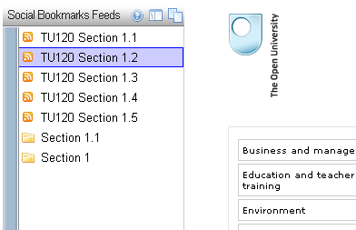
The navigation on the left actually shows different ways the links may be organised; note that when you get to the links, they are in reverse order, as discussed above.
Here are a couple more Grazr views:


4) It's easy enough getting the links out of delicious and putting them into a Google custom search engine like this TU120 search engine (week 1 links only, at the moment):

searchfeedr will also let you narrow the search down to 15 sites at a time, which would be ok for a section search; here's an example search over external links from TU120 section 1.1:

This exercise raised many more questions for me than it answered. For example,
a) how should we go about tagging link resources? One way might be to get students to add the semantic tags, and we could just provide architectural/administrative tagging? ;-)
b) user scenarios: how might students use linkrolls? How should we organise, distribute, promote, embed and/or link to external link rolls, if at all?
That databases and other resource collections have value in their own right is well known.
As we move towards more and more online courses, with course authors presumably continuing to deep link into third party sites (even if we are only supposed to link to the top level of a domain ;-) I think its worth asking how the knowledge locked up in linkrolls/link collections can be unlocked, as well as exploring ways in which further value can be added.
PS having put the links into delicious, I also realised I should have used Simpy. Simpy offers private groups, which means we can keep our IP locked up, even if we do use a third party social bookmarking service ;-)
PPS for newish readers to the blog who are interested in issues relating to the use of social bookmarking in formal education, you may be interested in reading Towards a Managed Social Bookmarking Environment in Higher Education.
November 03, 2006
Annotating Local, Navigable Copies of OpenLearn Content
Early this week I came across quite the most amazing Firefox extension I've seen for some time - Scrapbook. This extension lets you make a local (i.e. offline) copy of a site, and then do various nifty things with it - make personal annotations (or even shared ones if you have shared drive access), text highlighting, even search.
This extension particularly resonated with me when I came across it because earlier in the day we had been discussing at TU120 course team meeting the frequently asked question about how long students retain access to course materials from our online courses. (Several weeks is the answer - then the material is no longer avialable).
There is also a not totally unrelated issue at the moment with OpenLearn content, in the sense that the URLs for the current materials appear not to be very stable (though I have been told this is something that will be addressed in the near future...) - so while the content may stay up there, it may not be at the place you bookmarked...
Anyway - printing out online materials is one way of getting a persistent copy of onine materials, as is downloading them - although when pages can only be saved one at a time this can be quite a time consuming process.
So this is one area where Scrapbook caught my interest - the ability to download very easily all the pages from a course. So for example, we could go to the index page of an OpenLearn course, which has links to all the course content pages from it, and use those links to download all the course information:

A similar approach can be used for saving local copies of Technology short course pages: go to the course index page (that is, click on the Index tab , rather than Home tab) of a Relevant Knowledge course and download in one go the course content pages linked to therefrom. Readers of this blog on any of these courses may wish to pass this info on via a course conference forum ;-)
Grabbing the index page - and the pages that are linked to from it - is easy: simply take the 'Capture Page As..' option from the Scrapbook menu:
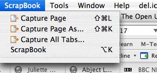
You now have to configure the download - take the links of depth 1:

This gives you a list of all the pages that are linked to, which is way more than the ones you actually want:

There are two ways of getting round this - one is to pause the download as soon as you can and just select the pages you want to download. One way of identifying which links those are is to hover over the links you want to download (or exclude) on the index page and make a note of the URL that should appear in the status bar at the bottom left corner of the browser window:

Another way is to use the skip button to skip the download of the next link in the download list - there is a 3 second delay between downloads to give you time to make this decision for each link.
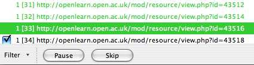
For this 'Capture Page As...' download option., all the saved files are access via a single Scrapbook item, which you can find in the Scrapbook sidebar:

(It is also possible to save each page as separate Scrapbook items, although local navigation between the pages will not then be respected.)
If you select an item in the Scrapbook, you are taken to the local copy of that Scrapbook item. Two toolbars are then available at the bottom of the screen, that can be configured from the Scrapbook item right at the bottom of the browser window:
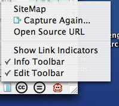
The Edit toolbar:

And the Info toolbar:
The Info toolbar actually provides a sitemap to all the pages you downloaded:

This is handy, because although the downloaded material has all the links localised, (so the navigation through the OpenLearn material is within your downloaded local copy of the material) the current OpenLearn navigation through materials is all but unusable (although solutions are in principle available).
The utility of the Scrapbook as a study support tool now moves up another gear. For example, you can highlight or annotate the saved content:

Annotations can either be inline (and displayed via a popup tooltip) or floating 'post-it' type notes:

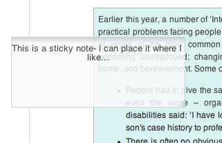
Another hand tool is the ability to search through the save content:
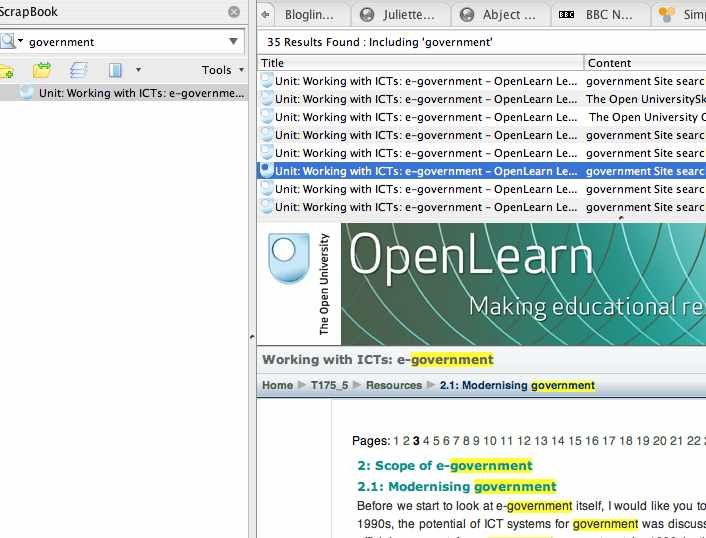
More tools are available too - the Scrapbook tutorial is well worth a read, even if you don't get this extension, just so you know what you're missing out on.
One thing I liked in particular that I picked up from the tutorial was the add-on (yep - the Scrapbook extension can be extended with further add-ons - how neat is that? ;-) that allows you to back up your local, annotated, archived materials up to the box.net online storage service (which I actually first got into through the PageFlakes webtop...).
If the new OU MyStuff ePortfolio supports an API, then it may be worth hacking together an extension for Scrapbook so that it can be used with that service.
(Of course, what I'd really like to see is MyStuff provide an option that would allow students to use the MyStuff interface with their own online storage service, so they could keep their content where they wanted.)
Perhaps the ultimate toy would be to add Scrapbook style bulk download functionality (and maybe the annotation and highlighting tools) to Zotero, which provides more sophisticated collection management tools, as well as bibliographic reference tools?
October 24, 2006
Is Google Custom Search OUseful?
Maybe...
Here are a few ways of using Google Custom Search that came immediately to my mind:
- For collecting links in a course team while a course is in production. We could do this with a social bookmarking tool, of course, but search is easier... and getting new domains into the search engine is just a case of bookmarking them, really...
- For providing a course search engine, in which all the external links mentioned in a course (particularly online courses) are used to prioritise results in an otherwise general Google search;
- As a place for students to contribute useful links to a course specific search engine. This might include links to tutorials and additional material discovered by the students.
October 03, 2006
Interaction Design - "Now Follow This Link"
Every time I get involved with producing new online course materials, I get fired up by the possibility of working out new styles of interaction that may or may not prove to be very OUseful. Being a reflective practitioner (?!), I also take these opportunities to explore my own understanding of how online course materials differ from our more traditional print offerings.
Take weblinks for example. Our online course materials increasingly make use of embedded links to 'additional reading' materials, as well as links out to pages we want students to read and critique, or comment upon, as part of a structured activity. Typically, these links are well signposted and explicitly presented as links. Here's an example from Beyond Google:
In this exercise I want you to get a feeling for the nature and extent of UGC. You should expect to spend at least an hour on this. Indulge your curiosity and follow links that interest you.
1. Visit Technorati
Use the search box to look for blogs on subjects that interest you. Follow some of the links to get a feeling for each type of blog. (Tip: you can usually get to the blog's home page by clicking on its title.)
2. Visit Flickr
Get a feel for the site.
continues...
We also use inline links, which are slightly more reminiscent of the blogging style:
Yahoo! make one such 'Related Suggestions' tool available as a web service that other people can build into their own systems.
You can try out the 'Related Suggestions' service using your own search terms
For students who are not confident web users, how to approach embedded links may be problematic. Should I click through as soon as I see the link, read the page and come back to it? Is the link a 'must follow' link, or is it optional, and so on. The text surrounding the link text can help here, but even so, how the student should address the content linked to from an inline link is not obvious.
Under certain circumstances, one way of interpreting the sense of an inline link is to treat it as akin to a glossary item, or potentially an explanatory note, depending on context. That is, it is there to provide either an elucidation or clarification of a term or concept (the term or concept represented by the link text), or to explore, or justify, that term in a little more detail.
Another problem with how to address links as educational designers is where to open the pages that are linked to, and to manage through instruction/guidance, and on behalf of the user, the number of pages that are likely to be open at anyone one time.
If the links open the page into the same window, only one page can be open at any one time - the user can't "queue up" several open pages at once that they can then visit in turn. Opening links into the same problem may cause problems with navigation though - the user loses site of the course material page they followed the link from, and must user the back button or other browser navigational tools to recover the page.
For non-tabbed browsers such as IE6, opening links in new pages can cause the user a problem with window management, and poses questions for the interaction designer along the lines of - how big should newly open windows be, should links open into one and the same new window or multiple window, where should newly opened windows appear on the screen, how large should they be, how should they be layed out (should the browser toolbar be displayed, for example), which window should take the focus, and so on.
Tabbed browsers make life much easier - and when IE7 is made available as a Windows update I think we really should push for students to download it on usability grounds, as well as security. (Whilst we could push Firefox, and do make it available on the Online Applications CD-ROM that is sent to all our students, the reality is that, along with the majority of PC users, they are most comfortable using the tools Microsoft installs for them).
As far as I know, no-one has written yet about how universal tabbed browsing might change elearning activity design through the interactions it affords, but I think that this is an area where huge developments in usability and the way we approach the use of outlinks from elearning materials might result.
(Using tabbed displays within a single page is another matter altogether. See for example Using iframes in a Tab Widget to Support Web Page Comparison or SearchTab Display of Several Web Search Engines. )
Overlaying pages using transparency is yet another possibility and one that I explored yesterday with a slightly hacked lightbox script. Lightboxes are rather neat style effects in which a dark, semi-transparent overlay is placed on top of a web page, with a 'normal' brightness (i.e. now effectively highlighted) image or dialogue (such as a login panel) placed centrally within the window.
The idea was to use a lightbox containing an iframe to display a web page that a student had clicked through to. This keeps the student in the frame of reference of the course material (they can see the course material through the dark, transparent overlay) and yet forces them to focus on the newly opened window (which may or may not be an external site). Here's a demo: open a link in a lightbox (follow a lightbox link...):


More often than not, this sort of playing I engage in goes nowhere, in part because I don't think things through enough to persuade people of the merits - if any - of the ideas I tinker with (completer-finisher is one of the team roles that I just don't do!), but also because there hasn't really been anywhere in the OU where I felt I could raise and discuss potentially innovative ideas. One reason for blogging them, I guess...
But today I got an invite to attend a "new OU eLearning Community (eLC)", along with a host of others active in the area (it was interesting to see who was on the list) and the "new curriculum innovation and elearning innovation fellows (20 new OU appointments)". I didn't know we had such people?!
Anyway, along with a Digilab - a new media oriented, physical playspace that will open in the Library next month (and about which I'll post in a month or so) - it will be interesting to see whether we can start - and maintain - a cross-campus elearning ideas factory that will allow us to continue to drive the development of pedagogically sound, student-centred online course materials. I'll keep you posted... (err, in fact, if you an OU internal reader of this blog, you probably should have been invited..?)
LAUNCH DATE IS TUESDAY, 28/11/06, IN THE LIBRARY, 5-7pm
September 27, 2006
SearchTab Display of Several Web Search Engines
I've just been doodling a few tweaks to my tabbed search engine display page, and the result is quite fun (well I think so) so I thought I'd post it here:
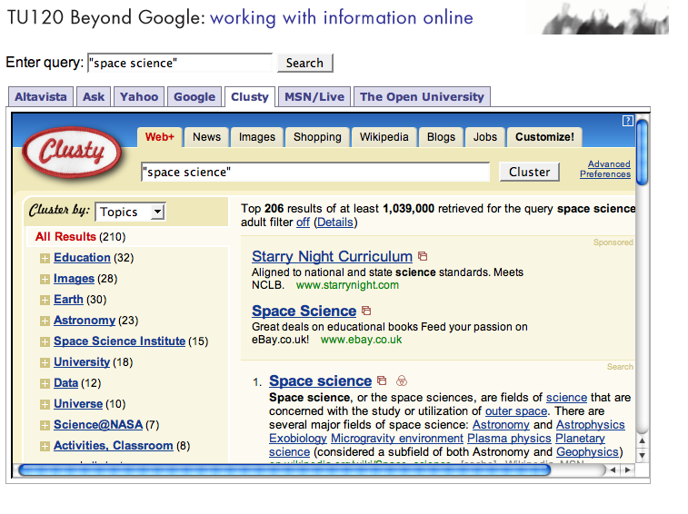
The page has an API of sorts:
- http://ouseful.open.ac.uk/searchTabs.php is the page itself. Arguments can be added on to the end of the URL by using a ?followed by the required argument(s). Multiple arguments are separated in the normal way with an ampersand (&).
- q= defines the query string; quoted phrases are ok too (for example, q=%22space%20science%22 in the URL gives the quoted phrase "space science" in the query shown). If you call the page with a query in the URL, it will make that query available to all the search engines when the page loads.
- s= defines the search engines to be displayed, and the order they should appear in. Each search engine is distinguished by a one (and maybe two, in future) character code, comma separated. The codes are as follows:
- g Google
- y Yahoo
- m MSN/Microsoft WIndows Live
- c Clusty
- a altavista
- A Ask
The OU search tab is always provided.and still appearsAll the supported search tabs appear if the s argument is omitted.If you want to load a page with a couple of search engines, and no initial query, just use the s argument - e.g. http://ouseful.open.ac.uk/searchTabs.php?s=y,g gives you Yahoo! andf Google.
So for example, the URL http://ouseful.open.ac.uk/searchTabs.php?q=%22technology%20faculty%22%20robotics&s=a,c,y loads the following page:
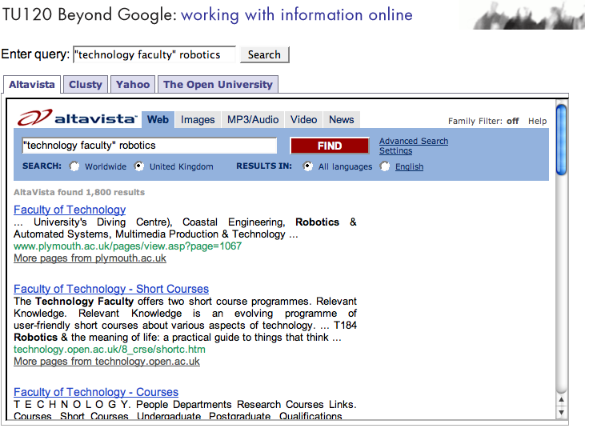
The intention behind the search tabs page is to allow a relatively quick an easy comparison of several search engines using the same query.
This may be useful in information skills programmes, if only to help students realise that there are alternative, general purpose web search engines to Google, and that they all tend to give slightly different results.
if there are any search engines missing that you think really should be included, drop me a line.
September 08, 2006
Using iframes in a Tab Widget to Support Web Page Comparison
A couple of things I'm keen to hammer home in an early section of Beyond Google are: a) that Google is not the only general purpose search engine out there; and b) that the different, major league search engines may return differently ranked results for identical queries made at the same time.
To try and encourage students to compare search queries across search engines, I have been exploring various ways in which we might used tabbed widgets to embed search pages within a teaching page.
I have popped up several demos at Multisearch panels demo, including examples of applying the same, predefined search to several search engines via a single link, and allowing the user to apply a single search box query to several search engines at the same time.
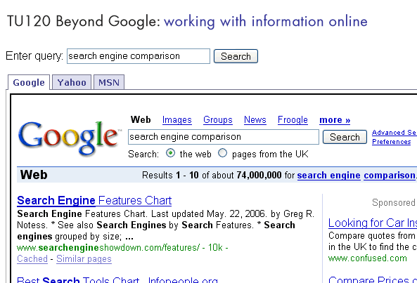
I've also doodled a couple of standalone pages: GYM Comparison and Google Scholar and Windows Live Academic.
An alternative GYM comparison page additionally allows you to a pass a search query directly in to the page, as for example this multiSearch on tabbed browsing.
One thing I did briefly consider was using AJAX search APIs to pull the results from the different search engines directly into the page.
However, because we want the students to know the results really are coming back from the specified search engines, embedding the real SERPs in an iframe makes this abundantly clear. As far as copyright issues relating to embedding one page in another goes, I would say this is a fair use - no claim other than that the embedded pages are the actual ones are made, and the pages are being embedded to support a comparison being made in an educational context.
We're still working out the best way - if at all - of integrating these sorts of interactive exercise within the course materials, so if anyone has any comments - or has tried something similar in the past - please get in touch...
PS Partly in response to this article on "A great feature in AltaVista, alltheweb, and Ask.com, but not in Google", which describes limit searching by date on the Altavista, AllTheWeb and Ask - but not Google - advanced search pages, I felt I ought to knock up an advanced search page tabbed display.
I wonder too whether I really should add a few more search engines to the basic search engine display panel?
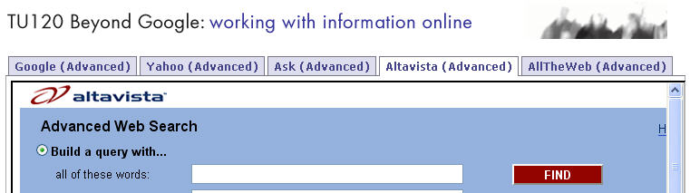
PS I just came across GahooYoogle which allows you to search Google and Yahoo (web search, image search etc) side by side in a spilt panel view.